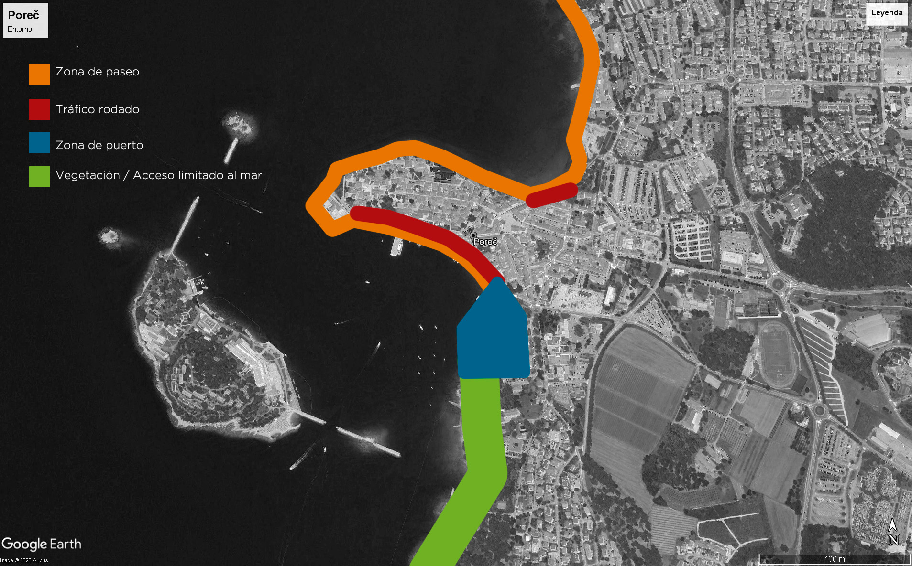

Geometría de la Ciudad frente al Mar IV: Poreč
Cinco años más tarde, retomamos la colección viajando fuera de España. Análisis de la relación de Poreč con el mar: una ciudad que lo muestra siempre como algo lejano.
Leer más →Historias, reflexiones y momentos capturados a través del objetivo.

Cinco años más tarde, retomamos la colección viajando fuera de España. Análisis de la relación de Poreč con el mar: una ciudad que lo muestra siempre como algo lejano.
Leer más →
Todos los posts de la etapa anterior de Belenbuuur siguen disponibles en el blog original de WordPress.
Ver archivo →